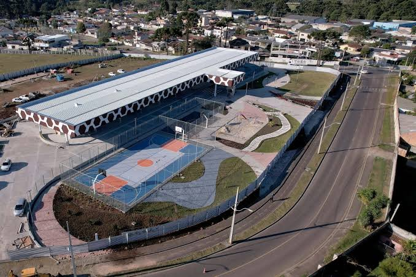

Como ter um site para salão de beleza em Piraquara que carrega em 2 segundos e lota a agenda

Para ter um site para salão de beleza em Piraquara que realmente traga clientes e lote a sua agenda, a velocidade de carregamento é o fator mais crítico do seu posicionamento digital. Se a sua página de agendamento demora mais do que dois segundos para abrir no celular de uma cliente em potencial na região, ela simplesmente desiste e vai para o concorrente. O design visual bonito perde todo o sentido se o seu público sequer consegue visualizar a sua página.
Eu sou Eros Gomes, designer de marcas e estrategista de comunicação, e no meu processo de trabalho eu vejo constantemente este erro clássico: donos de negócios investindo muito em postagens para redes sociais, mas direcionando o público para um link de agendamento instável ou lento. Neste artigo, vou detalhar como o desenvolvimento de sites em Piraquara com foco em performance técnica direta pode mudar o patamar de faturamento do seu salão de beleza ou clínica de estética.
Por que a velocidade do site é o principal fator de perda de agendamentos?
Um site lento faz com que o cliente em potencial desista do agendamento antes mesmo de conhecer os seus serviços, gerando frustração imediata. Cada segundo extra que sua página leva para carregar reduz drasticamente a taxa de conversão, transformando o investimento em anúncios em prejuízo imediato. No mercado de beleza de Piraquara e região metropolitana, onde a decisão de compra é motivada por desejo e conveniência, a agilidade no atendimento digital dita quem fica com a agenda cheia.
Uma pesquisa amplamente divulgada pelo Google (Think with Google) mostra que a probabilidade de rejeição aumenta em 32% quando o tempo de carregamento de uma página vai de 1 para 3 segundos. Se demorar 5 segundos, esse abandono salta para 90%.
No dia a dia do seu cliente, o cenário é real: a pessoa está no ônibus voltando do trabalho no centro de Curitiba para Piraquara, usando a rede móvel oscilante da região. Ela vê um post seu no Instagram, se interessa por um procedimento estético e clica no link da sua bio. Se a página demorar dez segundos para carregar o formulário ou o botão do WhatsApp, ela fecha o navegador. A atenção do consumidor moderno é o recurso mais escasso que existe.
O impacto financeiro: quanto custa um site lento para um salão de beleza em Piraquara?
Um site lento custa caro porque desperdiça o tráfego qualificado que você atrai através das redes sociais ou de anúncios locais no Google. Se cem pessoas clicam no link do seu salão e metade delas desiste no meio do caminho devido à demora, você está jogando fora metade da sua verba de atração. Na prática, a lentidão atua como uma barreira invisível que empurra seu cliente para os concorrentes locais que oferecem uma experiência digital mais fluida.
Para tornar esse prejuízo tangível, preparei uma simulação simples baseada em dados comuns de comportamento do usuário em sites lentos versus páginas otimizadas:
| Métrica de Desempenho | Cenário A (Site Lento - 8 segundos) | Cenário B (Site Otimizado - 2 segundos) |
|---|---|---|
| Cliques mensais no link da bio | 1.000 cliques | 1.000 cliques |
| Taxa de abandono por lentidão | 60% (600 pessoas desistem) | 5% (50 pessoas desistem) |
| Usuários que de fato veem o site | 400 pessoas | 950 pessoas |
| Taxa de agendamento (média de 5%) | 20 agendamentos realizados | 47 agendamentos realizados |
| Ticket médio do salão (R$) | R$ 150,00 | R$ 150,00 |
| Faturamento Mensal Estimado | R$ 3.000,00 | R$ 7.125,00 |
A diferença técnica de seis segundos no carregamento representa mais que o dobro de faturamento no final do mês. Como especialista em web design em Piraquara, defendo que o site não é apenas um cartão de visitas decorativo, mas sim uma engrenagem de vendas direta. Se essa engrenagem está travada, o seu lucro está escorrendo pelo ralo.
Como criar uma landing page para salão de beleza focada em alta conversão?
Uma landing page para salão de beleza eficiente une um design leve, carregamento instantâneo e uma chamada para ação (CTA) extremamente clara e visível logo na primeira tela. Ela deve guiar a cliente diretamente para o botão de agendamento no WhatsApp ou sistema de reservas, sem distrações visuais pesadas ou imagens desnecessariamente gigantescas. O segredo é equilibrar estética premium com otimização técnica rigorosa.
No meu trabalho com marcas locais e regionais, eu sigo diretrizes claras para garantir que a página converta o visitante em cliente pagante:
- Primeira dobra direta: Logo ao abrir a página, sem precisar rolar a tela, a cliente deve ver o nome do salão, a especialidade (ex.: 'Especialistas em mechas e loiros em Piraquara') e um botão de agendamento destacado.
- Prova social leve: Depoimentos de clientes reais de Piraquara e região metropolitana, mas em formato de texto leve ou imagens compactadas, sem carregar scripts pesados de terceiros.
- Imagens otimizadas: Fotos do salão e dos resultados dos cabelos precisam passar por compressão profissional. O formato WebP deve substituir o tradicional JPEG para reduzir o tamanho dos arquivos em até 75% sem perder a definição necessária.
Quais são os principais erros que deixam o site do seu salão de beleza lento?
Os principais erros que deixam o site de um salão de beleza lento são imagens de portfólio pesadas e sem otimização, excesso de plugins desnecessários na plataforma e o uso de construtores de páginas genéricos que incham o código fonte. Além disso, a escolha de uma hospedagem barata e sem servidores otimizados para o Brasil atrasa a resposta do servidor a cada clique.
Abaixo, apresento um comparativo dos erros comuns de desenvolvimento versus as práticas de web design de alta performance que aplico nos meus projetos:
| Erro Comum (O que torna o site lento) | Solução Profissional (O que traz velocidade) |
|---|---|
| Upload de fotos direto do celular (arquivos de 5MB ou mais) | Redimensionamento e compressão em formato WebP (arquivos sob 100KB) |
| Uso de construtores visuais pesados (Elementor/Divi mal configurados) | Desenvolvimento com código limpo, focado em performance mobile |
| Hospedagem de site barata e compartilhada fora do Brasil | Servidores locais de alta velocidade com tecnologia LiteSpeed e cache ativo |
| Excesso de animações e efeitos de transição que travam o celular | Design limpo, focado na usabilidade, clareza e carregamento imediato |
| Scripts pesados de redes sociais carregando antes do conteúdo principal | Carregamento tardio (lazy loading) para elementos de terceiros |
Entender essas diferenças técnicas é fundamental para o dono de salão de beleza que deseja parar de perder clientes. O design de alta performance trabalha nos bastidores, garantindo que a estrutura do site seja leve e ágil.
Passo a passo para testar e carregar o site do seu salão de beleza mais rápido
Para testar e acelerar a velocidade do seu site, você deve primeiro medir o desempenho atual usando ferramentas gratuitas como o Google PageSpeed Insights. Em seguida, aplique correções técnicas como compressão de imagens, limpeza de scripts externos e ativação de cache no servidor. Se esses passos parecerem complexos, contar com o suporte de web design em Piraquara focado em performance é o caminho mais seguro.
Se você deseja identificar os gargalos da sua página atual sozinho, siga este roteiro prático:
- Faça o diagnóstico técnico: Acesse a ferramenta gratuita Google PageSpeed Insights e insira o endereço do site do seu salão. Analise a nota para dispositivos móveis (mobile), que é onde 90% das suas clientes estão.
- Reduza o peso das fotos de portfólio: Utilize ferramentas gratuitas de compressão online para reduzir o tamanho de todas as fotos de antes e depois dos procedimentos antes de colocá-las no site.
- Instale um sistema de cache eficiente: Se o seu site utiliza uma plataforma como o WordPress, configure um plugin de cache de qualidade para salvar versões prontas da página e poupar o processamento do servidor a cada acesso.
- Monitore o tempo de resposta do servidor: Avalie se a sua hospedagem atual não está sobrecarregada. Às vezes, migrar para um servidor com melhor tecnologia resolve gargalos críticos sem alterar uma única linha de código.
- Simplifique a rota de agendamento: Remova etapas desnecessárias. Se o objetivo é fazer o cliente chamar no WhatsApp, certifique-se de que o botão de contato esteja visível e funcione instantaneamente.
Por que o link da bio do Instagram precisa de uma página profissional rápida?
O link da bio do Instagram é a principal porta de entrada do seu cliente local, e depender de agregadores de links lentos ou de sites pesados destrói o interesse gerado pelos seus posts. Uma página profissional rápida, desenvolvida sob medida para dispositivos móveis, garante que a empolgação da cliente ao ver um antes e depois no feed se transforme em um agendamento imediato. É a ponte direta entre a atenção na rede social e o dinheiro no seu caixa.
A maioria dos salões de beleza em Piraquara utiliza serviços genéricos e gratuitos para agrupar links na bio. O problema é que essas ferramentas gratuitas costumam exibir anúncios, demoram a carregar e oferecem uma experiência visual amadora, que não condiz com um serviço de beleza de alto padrão. Uma landing page para salão de beleza própria e otimizada transmite autoridade, além de reter o visitante no seu próprio ecossistema comercial.
Quando a comunicação visual do seu salão é consistente e o site abre de forma instantânea, você estabelece confiança imediata. O cliente percebe o profissionalismo nos detalhes técnicos, o que facilita a cobrança de um preço justo pelos seus serviços.
Perguntas frequentes sobre site para salão de beleza em Piraquara
Quanto custa criar um site para salão de beleza em Piraquara?
O custo varia de acordo com a complexidade do projeto, número de páginas e integrações de agendamento necessárias. Um investimento em desenvolvimento de sites em Piraquara focado em alta performance e conversão se paga rapidamente ao evitar a perda de clientes que chegam pelo tráfego orgânico e pago.
Por que o meu site demora tanto para carregar no celular?
Geralmente, a lentidão ocorre devido a fotos muito pesadas sem compressão, excesso de códigos desnecessários acumulados e o uso de servidores de hospedagem de baixa qualidade. Ajustes técnicos de otimização conseguem reduzir esse tempo de carregamento de forma drástica.
O que é melhor: um site completo ou uma landing page para salão de beleza?
Para campanhas de conversão focadas em agendamento rápido, uma landing page de página única é mais eficiente por guiar o usuário diretamente para a ação sem distrações. Um site completo é ideal se você oferece muitos serviços distintos, cursos ou precisa de uma seção institucional robusta.
Como a velocidade do site afeta as minhas campanhas no Google Ads?
O Google penaliza anúncios direcionados para páginas lentas, cobrando mais caro pelo clique e reduzindo a exibição das suas campanhas. Um site rápido melhora o seu índice de qualidade na plataforma de anúncios, reduzindo o custo por clique e aumentando o retorno do seu investimento.
Conclusão
A velocidade de carregamento é o pilar invisível que sustenta a lucratividade do seu posicionamento digital. Não adianta ter o salão mais sofisticado de Piraquara se a sua porta de entrada digital está emperrada por falhas técnicas básicas de web design. O seu cliente valoriza o tempo dele tanto quanto valoriza a própria aparência.
Se você percebeu que o site do seu salão de beleza lento está afastando clientes e deseja transformar sua presença digital em uma máquina de agendamentos rápida e eficiente, entre em contato comigo. Vamos analisar o seu projeto atual e desenhar uma solução sob medida para lotar a sua agenda em Piraquara e região. Converse comigo pelo WhatsApp (41) 98812-2525 para iniciarmos o seu projeto de alta performance.